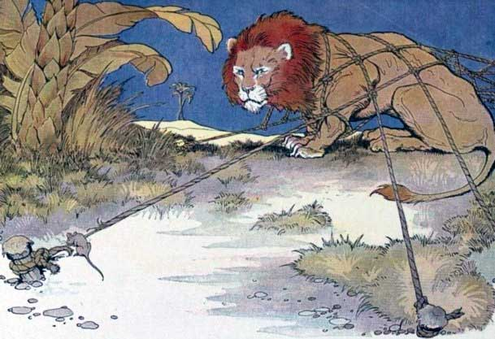

|  |
A Lion lay asleep in the forest, his great head resting on his paws. A timid little Mouse came upon him unexpectedly, and in her fright and haste to get away, ran across the Lion’s nose. Roused from his nap, the Lion laid his huge paw angrily on the tiny creature to kill her. “Spare me!” begged the poor Mouse. “Please let me go and some day I will surely repay you.” The Lion was much amused to think that a Mouse could ever help him. But he was generous and finally let the Mouse go. Some days later, while stalking his prey in the forest, the Lion was caught in the toils of a hunter’s net. Unable to free himself, he filled the forest with his angry roaring. The Mouse knew the voice and quickly found the Lion struggling in the net. Running to one of the great ropes that bound him, she gnawed it until it parted, and soon the Lion was free. “You laughed when I said I would repay you,” said the Mouse. “Now you see that even a Mouse can help a Lion.”
|